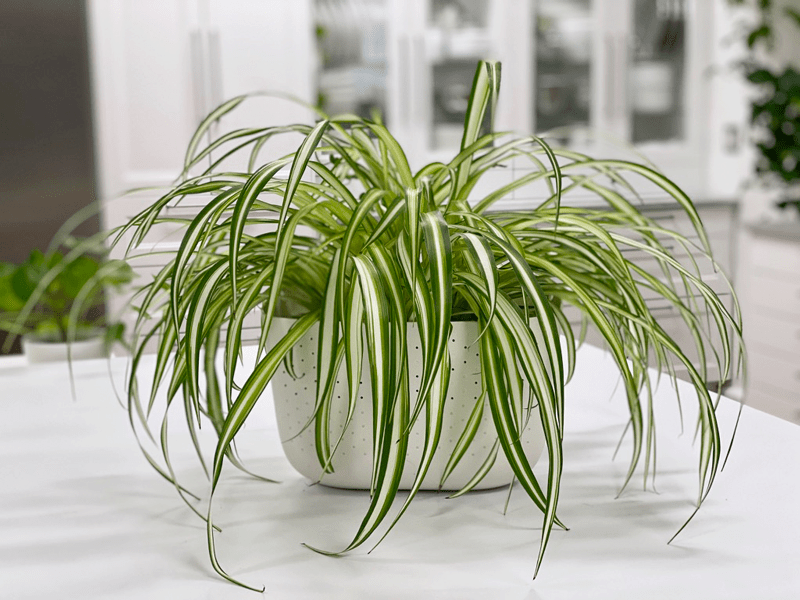

Spider Plant | Care Difficulty – Easy
I love spider plants because they remind me of a beautiful bad hair day. Actually, it’s like an ’80s hairdo, which I still love to rock every once in a while. Which of course Bob gives me a bad time about–well, more like teases me, which is precisely what I used to do with my hair… tease it. Anyway, we are here to talk plants, not my hair. So, let’s see what we can find out about these lovely plants.

Here’s what I love about spider plants… they look like they are so full of energy, and they add a wonderful contrast when decorating. Depending on their size, they can fill in a space in a room, giving it a lush appearance. Since they do well in low light, they are great for most rooms in your house or office. Just remember that most plants that can handle low-light conditions often thrive better with more light. So, if your plant isn’t growing or thriving, try relocating it to a different spot.
Light Requirements
Spider plants will tolerate lower light conditions, but they prefer bright indirect light to flourish. The striping on the leaves will be more prominent with indirect lighting. Avoid direct sunlight, as it will scorch the leaves. I have my spider plant on my living wall that gets northern sun exposure.
Water Requirements
When watering spider plants, allow them to dry out between waterings; otherwise the plants become soggy, which can lead to root rot.
Temperature & Humidity
They prefer temperatures between 60–80 degrees during the day and above 55 degrees at night. Spider plants do well in low humidity environments but will thrive with a bit more humidity. Watch for brown tips, as this may be an indicator of not receiving enough humidity.
Fertilizer – Plant Food
Fertilize up to twice a month in the spring and summer; however, avoid overfertilization, which can lead to brown leaf tips. There is no need to feed in the autumn or winter due to the plants going dormant, unless you live in an area with warm winters. Always make sure the soil is damp before applying any fertilizer. If you overfeed your plants, they will let you know. Here are a few things to watch for:
- Yellowing or browning leaves.
- The top surface of the soil may be white or crusty.
- The leaves of the plant will start dropping off.
- The roots can begin to rot.
If you overfeed a plant, you can remove from its current soil and repot it in fresh soil. This technique is undoubtedly the best way to get rid of the excess nutrients affecting your plant. Alternatively, you can flush the soil, which involves drenching the soil with water and letting it drain out. Repeat this several times to help the soil get rid of excess fertilizer.
Additional Care
- Remove any dead, discolored, damaged, or diseased leaves and stems as they occur with clean, sharp scissors. Snip stems just above a leaf node; new growth will emerge from this cut. I do this every time I water my plants. I use the watering time to inspect my plants thoroughly.
- Clean the leaves often enough to keep dust off of them. You can wipe the plant down regularly with rubbing alcohol to deter insects.
- About every six months, I like to give the plant some preventative treatments against the wildlife of plants (AKA bugs). I spray them down with a diluted rubbing alcohol solution, then wipe it off of each leaf with a clean cloth. After that, I spray it down with a neem oil solution. I will share all of this in another detailed post.
Plant Characteristics to Watch For
Diagnosing what is going wrong with your plant is going to take a little detective work, but even more patience! First of all, don’t panic, and don’t throw out a plant prematurely. Take a few deep breaths and work down the list of possible issues. Below, I am going to share some typical symptoms that can arise. When I start to spot troubling signs on a plant, I take the plant into a room with good lighting, pull out my magnifiers, and begin by thoroughly inspecting the plant.
Brown Leaf Tips
- Brown leaf tips can be from fluoride or salts found in water. This can also be caused by dry soil or too low humidity or brought on by overfertilizing the plant.
- Solution: Use distilled water or fill the watering can and let it sit out overnight. You can also periodically leach plants by giving them a thorough watering to flush out excess salts. Be sure to allow the water to drain out and repeat as needed. If you feel that the brown tips may be due to the plant getting too dry too often, adjust the watering schedule. If all else fails, try adding a humidifier to the room and see if that helps.
Fading Leaves
- The leaves on your spider plant may fade in color if they are thirsty.
- Solution: Check the soil, and if it consistently feels dry, up the watering schedule. But remember… don’t overwater, or it will suffer from root rot.
Wilting Leaves
- Insufficient light can cause the leaves to wilt. Spider plants do best in bright but indirect sunlight. Overheating can create this problem, as well.
- Solution: If you sense that the plant isn’t getting enough sun, relocate it to a better spot. If you feel that heat could be the culprit, once again, relocate the plant. Heat sources can be direct sunlight, near a fireplace, or house heat vents.
Brown Bases on the Leaves, Not the Tips
- If the bases of the leaves are turning brown, you may have a severe issue: root rot.
- Solution: Root rot in spider plants can be too far gone before you start to notice it. If you find browning at the base of leaves and wilted leaves, it’s time to take action. In spider plants, the leaves may fall out, yellow, or wilt, depending on the location of the damage. Remove the plant from the pot and check the roots. If they are black, brown, soft, or smelly, your plant is suffering from root rot. You may be able to save it by repotting. Remove the plant from the pot and wash away as much of the soil from the roots as possible to help you see where to make your pruning cuts. Cut away any mushy roots, so you’re left with only firm, healthy ones. Dust the cut areas with sulfur, if you wish, to prevent other pathogens from entering the cuts. Sterilize your tools thoroughly. Repot the plant into a new planter with drainage holes and hone in on your watering scheduling, avoiding overwatering.
Common Bugs to Watch For
If you want to have healthy house plants, you MUST inspect them regularly. Every time I water a plant, I give it a quick look-over. Bugs/insects feeding on your plants reduces the plant sap and redirects nutrients from leaves. Some chew on the leaves, leaving holes in the leaves. Also watch for wilting or yellowing, distorted, or speckled leaves. They can quickly get out of hand and spread to your other plants.
- Mealybugs look like small balls of cotton. They can travel, slooooooowly, but they have a strong will and determination! Though they are slow-moving, if any plant is touching another, there is a chance the mealybug will hitch a ride on a new leaf and spread. They breed like rabbits of the insect world. Females can deposit around 600 eggs in loose cottony masses, often on the underside of leaves or along stems.
- Scales are dark-colored bumps that are primarily immobile insects that stick themselves to stems and leaves. They are rather inconspicuous and don’t look like a typical insect. They can range in color but are most often brownish in appearance. They’re called “scales” primarily due to their scale-like appearance on a plant, due to waxy or armored coverings. They are often seen in clumps along a stem, sucking away at the plant’s juices with their spiky mouthpart.
- Aphids are more commonly seen if you place your plants outdoors. Aphids are indeed bugs. They are tiny insects that, along with black, also come in shades of yellow, green, brown, and pink. They are often found on the undersides of leaves.
- Spider mites are more common on houseplants. They are not insects – they are related to spiders. These appear to be tiny black or red moving dots. Spider mites are nearly invisible to the naked eye. You often need a magnifying lens to spot them, or you may just notice a reddish film across the bottom of the leaves, some webbing, or even some leaf damage, which usually results in reddish-brown spots on the leaf.
Toxicity
Spider plants are pet- and people-friendly!
© AmieSue.com